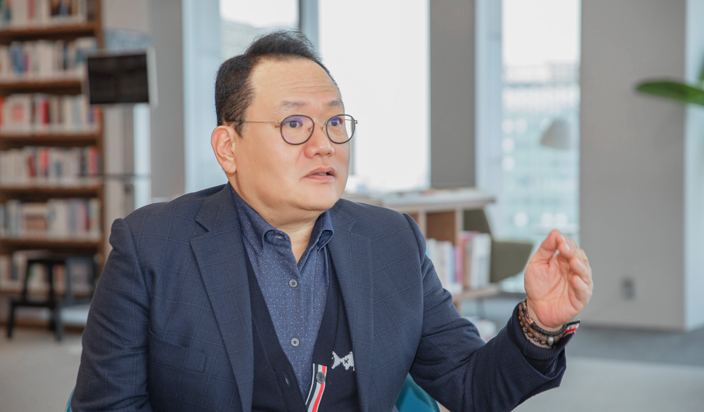

IT
라이나원 정영규 이사의 인터뷰 내용입니다.
- 
-
기업 경쟁력은 무엇인가요?
라이나 콜 인프라는 업계 최고를 자부합니다. ‘오토다이얼링' 시스템을 통해 고객에게 전략적으로 TM영업을 시도합니다. 코로나 펜데믹에 신속하게 대응하기 위해 텔레마케터를 위한 인프라 개선이 이루어졌습니다.
-
IT조직에 대해 간략히 소개를 한다면?
CS와 TM에 대한 인프라 총괄과 콜센터에 대해 개발부터 운영까지 토탈서비스를 제공하고 있습니다.
조직문화에 대해 궁금합니다.
새로운 시도를 바로 영업에 반영하고 결국 성공시킨다는 자부심이 있습니다. 모든 조직이 협업하여 소통하는 것이 자부심의 근간입니다. 연속성이 있는 영업을 위해 문제없는 시스템을 만들고, 개선을 위해 끊임없이 노력하는 IT의 조직문화는 ‘끈질김' 입니다. 자체시스템이 구축되어 있기 때문에 새로운 센터를 만들거나 장애가 발생했을 때, 빠른 대응이 가능합니다.
라이나원의 성장원동력
성장 원동력 업계 최고라는
자부심
업계 최고의 텔레마케팅을 유지할 수 있는 인프라를 만드는 팀이라는 자부심이 있습니다.
신속한 대응
실시간 분석을 통한 네트워크와 서비스 현황을 파악하고 문제점을 진단하며 해결방안을 제시할 수 있는 노하우가 있습니다.
유연한 위기관리 능력
펜데믹 동안 인프라를 개선하면서 영업실적이 증가하였고, 경쟁사에서도 라이나생명의 대응방안을 벤치마킹할 정도로 뛰어납니다.
상담사들에게 법인폰과 키보드, 모니터 등이 포함된 패키지를 기본적으로 제공하면서 어디서든 근무 가능한 인프라를 구축하였습니다.
TM에 특화된 인프라와 시스템을 구축하여 파트너사의 판매 경쟁력에 이바지
합니다.
-
System Operation
Service서버 운영 네트워크 운영 보안 솔루션 운영 -

Voice Infra
ServiceAuto Dialing System 운영 PBX 시스템 운영 CTI/VR 시스템 운영 녹취 시스템 운영 -
Application
ServiceApplication 운영 Application 개발 DB/WAS 운영